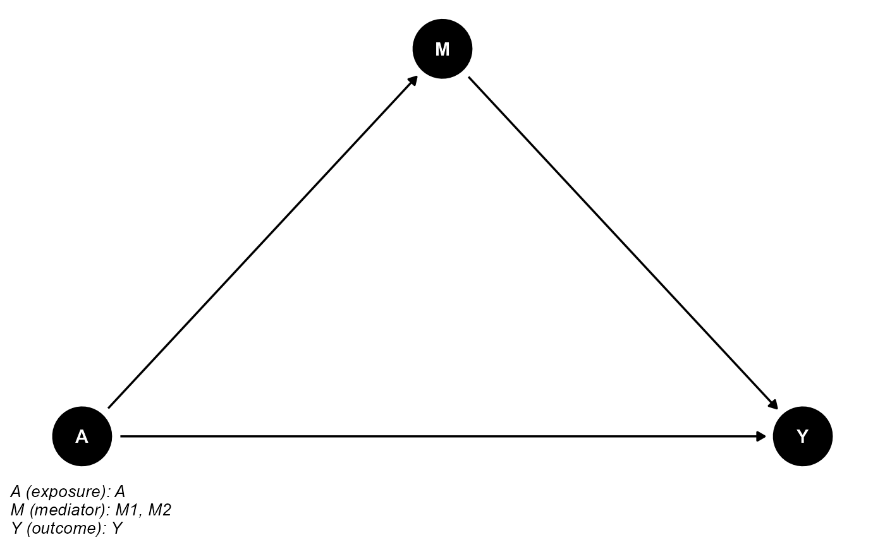
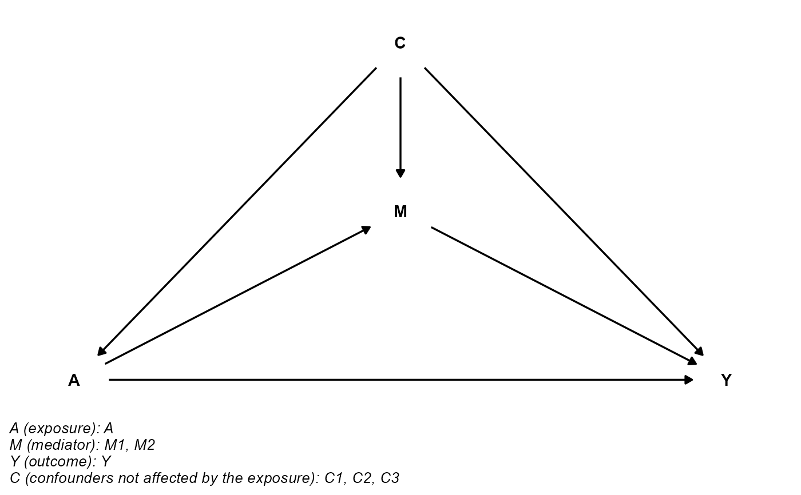
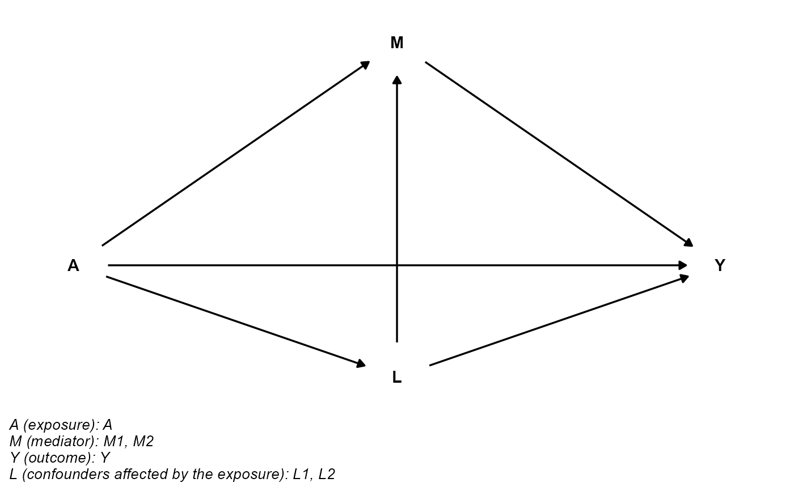
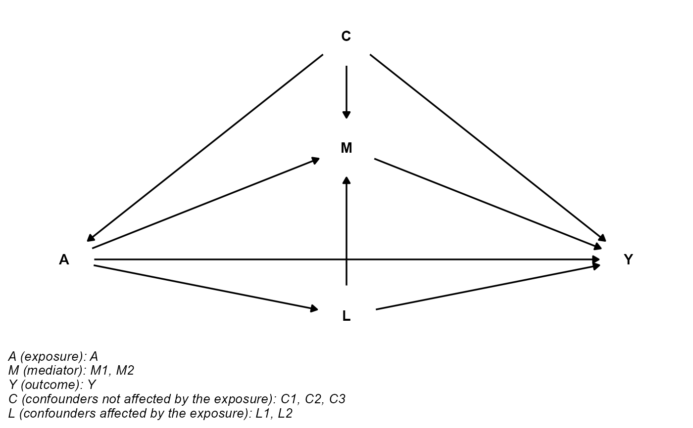

Plot the directed acyclic graph (DAG) for causal mediation analysis.
cmdag(
outcome = NULL,
exposure = NULL,
mediator = NULL,
basec = NULL,
postc = NULL,
x.outcome = 4,
x.exposure = 0,
x.mediator = 2,
x.basec = 2,
x.postc = 2,
y.outcome = 0,
y.exposure = 0,
y.mediator = 1,
y.basec = 2,
y.postc = -0.5,
caption.width = 50,
caption.size = 10,
...
)the variable name of the outcome
the variable name of the exposure
a vector of variable name(s) of the mediator(s)
(optional) a vector of variable name(s) of the exposure-outcome confounder(s), exposure-mediator confounder(s) and mediator-outcome confounder(s) not affected by the exposure
(optional) a vector of variable name(s) of the mediator-outcome confounder(s) affected by the exposure
x coordinate of outcome. Default is 4.
x coordinate of exposure. Default is 0.
x coordinate of mediator. Default is 2.
x coordinate of basec. Default is 2.
x coordinate of postc. Default is 2.
y coordinate of outcome. Default is 0.
y coordinate of exposure. Default is 0.
y coordinate of mediator. Default is 1.
y coordinate of basec. Default is 2.
y coordinate of postc. Default is -0.5.
line width in characters for the caption. Default is 50.
text size in pts for the caption. Default is 10.
additional arguments passed to ggdag(). See ggdag for details.
## basec and postc are empty
cmdag(outcome = "Y", exposure = "A", mediator = c("M1", "M2"),
basec = NULL, postc = NULL, node = TRUE, text_col = "white")

## postc is empty
cmdag(outcome = "Y", exposure = "A", mediator = c("M1", "M2"),
basec = c("C1", "C2", "C3"), postc = NULL, node = FALSE, text_col = "black")

## basec is empty
cmdag(outcome = "Y", exposure = "A", mediator = c("M1", "M2"),
basec = NULL, postc = c("L1", "L2"), node = FALSE, text_col = "black")

## basec and postc aren't empty
cmdag(outcome = "Y", exposure = "A", mediator = c("M1", "M2"),
basec = c("C1", "C2", "C3"), postc = c("L1", "L2"), node = FALSE, text_col = "black")
